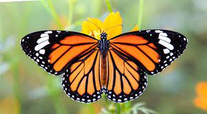

Insecto lepidóptero en estado adulto o perfecto; tiene el cuerpo alargado, con cuatro alas grandes y de colores generalmente muy vistosos producidos por unas escamillas o polvillo que las cubre.
Los lepidópteros, mas conocidos comúnmente como mariposas, un grupo de insectos superiores, los cuales, a lo largo de su vida sufren una serie de transformaciones complejas conocida como metamorfosis, y en la que se suceden las fases de embrión, larva, etc.
Las mariposas monarca poseen dos pares de brillantes alas color anaranjado, con venas negras y manchas blancas a lo largo de los bordes. Los machos poseen dos puntos negros a lo largo de las venas de sus alas y son ligeramente má grandes que las hembras.
Los científicos conocen a la mariposa monarca como Danaus plexippus, que en griego significa literalmente "transformación somnolienta". El nombre hace referencia a la capacidad que tiene la especie de hibernar y transformarse de oruga a mariposa.
Las mariposas monarca poseen dos pares de brillantes alas color anaranjado, con venas negras y manchas blancas a lo largo de los bordes. Los machos poseen dos puntos negros a lo largo de las venas de sus alas y son ligeramente más grandes que las hembras. Otra diferencia es que en las hembras, las venas a lo largo de sus alas son un poco mas gruesas que la de los machos.
